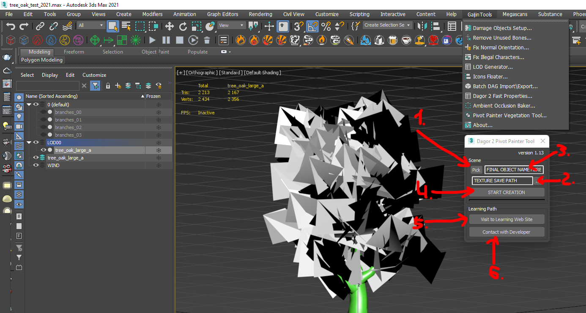
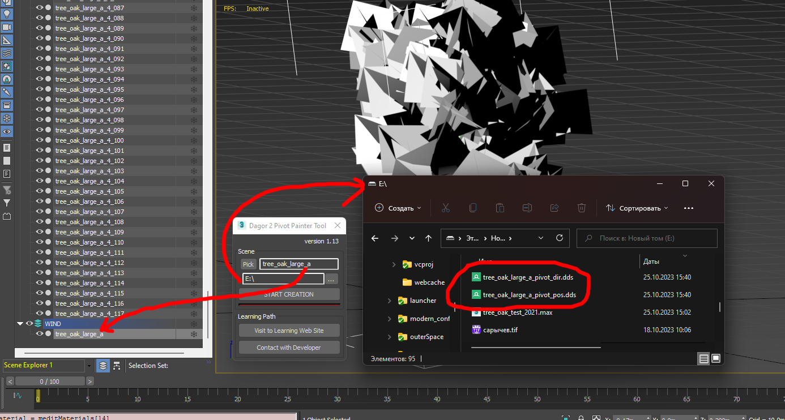

Dagor 2 Pivot Painter Vegetation Tool
Installation
Install the script following the provided instructions.
Important
This script requires 3ds Max 2015 or newer version to run.
Accessing the Pivot Painter Vegetation Tool
Navigate to Gaijin Tools ▸ Pivot Painter Vegetation Tool. This will open the main window of the Dagor 2 Pivot Painter Tool.
To verify the version (3) of the script, go to Gaijin Tools (1) ▸ About (2). The About window will display the current version. It’s important to check this regularly to ensure your script is up to date.

Note
Make sure that the plugin version is at least 1.4.
Using the Pivot Painter Vegetation Tool
To begin, open the Pivot Painter Vegetation Tool by navigating to Gaijin Tools ▸ Pivot Painter Vegetation Tool.
Download the following test scene: tree_oak_test_2021.max.
Important
This scene requires 3ds Max 2021 or a newer version.
Be sure to have installed GrowFX no lower than version 2.0.1.
The tool window will appear as shown below:

Key Features and Controls
Pick (1): Choose the GrowFX object that will serve as the parent for all other elements of the tree.
Texture Save Path (2): Select the directory where the generated position and rotation textures will be saved. For more information about these textures and their purpose, refer to the article: Pivot Painter Wind on Vegetation for daNetGame-based Projects.
Final Object Name (3): Specify a custom name for the resulting object. By default, the tool assigns the name of the selected object.
Start Creation (4): Initiates the tool’s operation.
Visit to Learning Web Site (5): Provides access to this article.
Contact with Developer (6): Opens a link to contact the tool’s author.
Workflow Example
Select
tree_oak_large_aand navigate to the Modify panel. Locate the Create Hierarchy of Meshes button. Ensure the Group by Path Color checkbox is unchecked before clicking the button.The script will generate a large number of hierarchically connected objects within the layer:
Select all the contents of this layer and assign the material previously applied to
tree_oak_large_a. The tool is now ready to work.Select the parent object using button (1) at the beginning of the hierarchy. This object is the root of all branches in the tree:

Use button (2) to specify the output path for the resulting
.ddstextures. Press button (4) to generate the texturespivot_pos.ddsandpivot_dir.dds, along with a new WIND layer containing the completed object with the assigned name.
After generating the textures, follow the instructions in the document: Pivot Painter Wind on Vegetation for daNetGame-based Projects.
Important
Script Limitations: Unlike the Houdini graph version, this script is limited to a maximum of 4 hierarchy levels within GrowFX. Consequently, the number of allowed links is restricted to 4x. In Houdini, any levels beyond the 4th will be merged into the last one, while this script will discard and not display them.
Object Limitations: Both this script and Houdini impose a limit of 2048 objects, derived from the maximum allowed texture size. Any objects exceeding this limit will be ignored by the script, and Houdini will also disregard them.